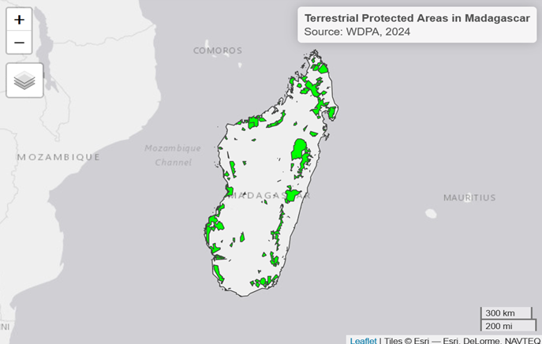
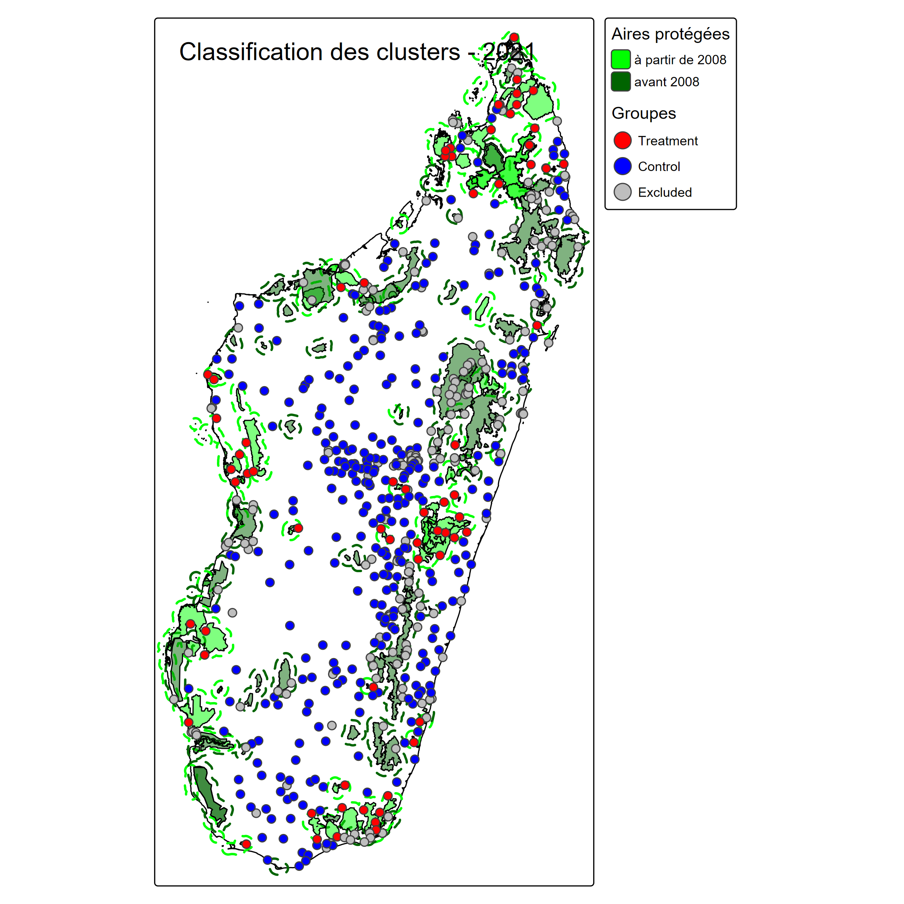
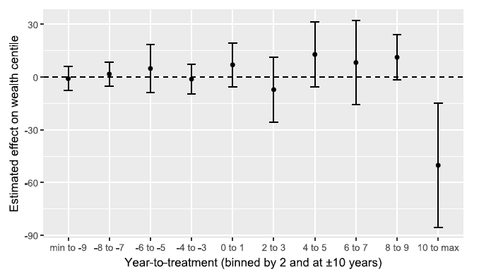
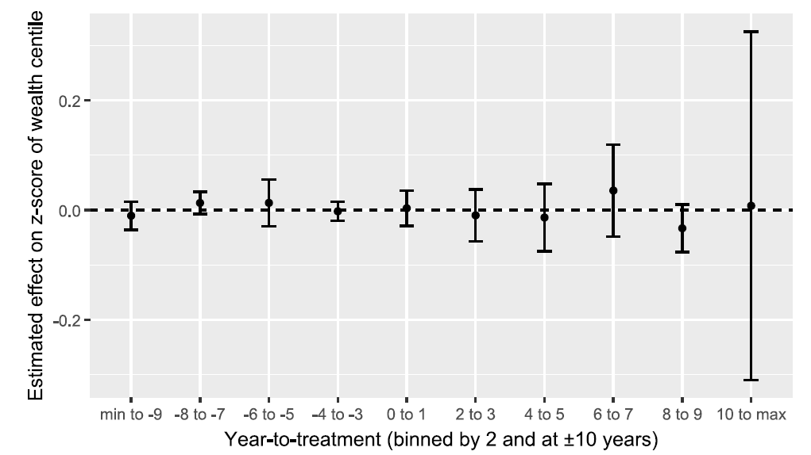
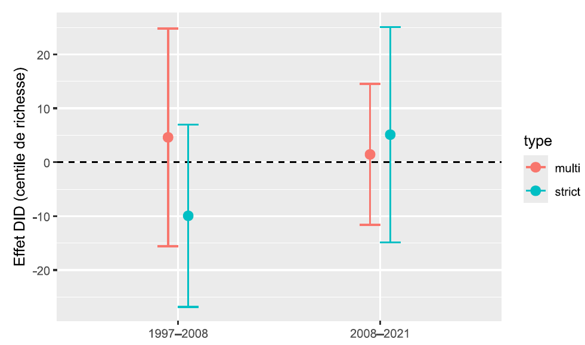

Titre de votre présentation
Sous-titre éventuel
Introduction
To what extent do protected areas impact household living standards?
Economic Opportunities
- Development of local tourism [@Naidoo2019],
- Creation of conservation-related jobs [@baliettiLaborMarketImpacts2024]
- Compensation measures [@Poudyal2018]
- Improved ecosystem services [@Xu2023]
Restrictions and Costs Restricted access to natural resources - gathering, hunting, fishing, medicinal plants [@Kandel2022]
Heterogeneous results Effects vary across evaluation methods, institutional contexts, and geographic locations [@Kandel2022].
Why Madagascar?
The area od protected areas and the size of the adjacent population exposed to them nearly tripled between 2008 and 2021
- 2008 : 3,6% of the territory — 9% population lived < 10 km of protected area
- 2021 : 10,8% du territoire — 28% population lived > 10 km of protected area
A Vulnerable socio-economic context
- The world’s poorest country based on SDG Indiator 1.1 [@Conceicao2024]
- High dependence on natural resources [@Llopis2023]
- Weak state capacity [@Hanson2021]
Source : Authors
Theory of Change
Empirical methodology
The data at the rural level
Combine geolocated household data from six nationally representative survey waves Demographic and Health surveys (1997, 2008, 2021), Malaria Indicator Surveys (2011, 2013, 2016) and Multiple Indicator Cluster Surveys (2018) - with the World Database on Protected Areas and geospatial environmental covariates (forest cover, slope, elevation, population density, accessibility, and standardized precipitation evapotranspiration index).
Dependent variable: Protected Areas Implementation, from WDPA, SAPM
Treatment group: households living in rural areas < 10 km of a Protected areas created between 2008 and 2021
Control group: households living in rural areas < 10 km of a Protected areas created between 2008 and 2021

Source : DHS,MICS,MIS, Authors
Baseline model: protected areas, living conditions, and rural
Results
Protected Areas impact on the household wealth index

Protected Areas impact on the household wealth index inequalities

Heterogeneity: Which Protected Areas Harm Most?
